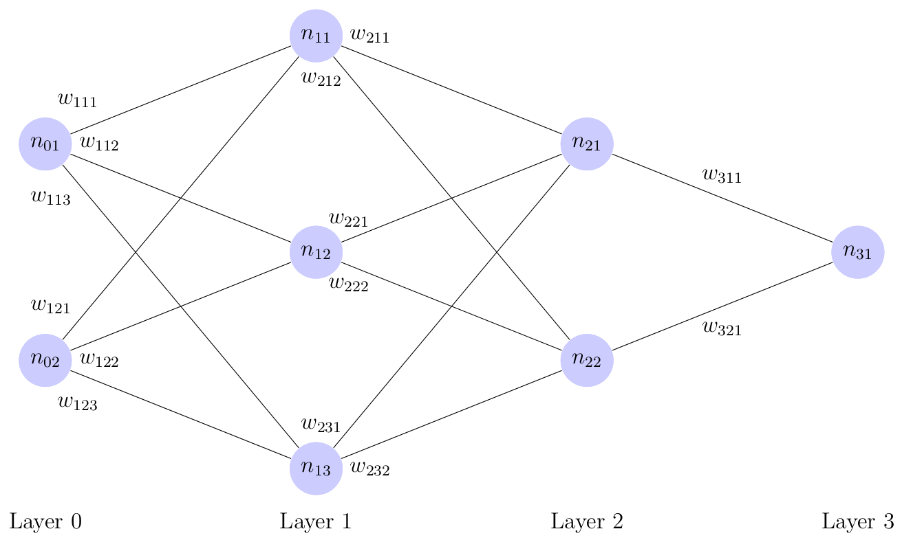
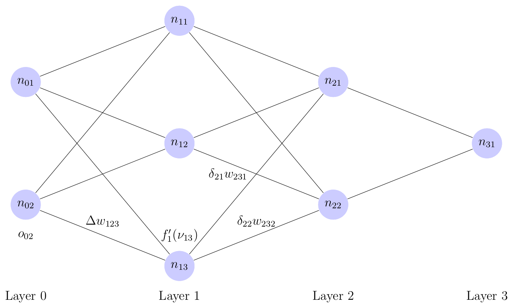

Figure 1: A Multi-Layer Perceptron Network
\[\displaylines{\textbf{o}_{i}=f_{i}(\boldsymbol{\nu}_{i})=f_{i}(\textbf{W}_{i}^{T}\textbf{o}_{i-1}+\textbf{b}_{i})}\ .\]
\[\displaylines{\hat{\textbf{y}}=\textbf{o}_{n}}\]
\[\displaylines{\textbf{o}_{i}= f_{i}(\textbf{W}_{i}^{T}\textbf{o}_{i-1}+\textbf{b}_{i})}\]
\[\displaylines{\textbf{o}_0=\textbf{x}}\ .\]
\[\displaylines{E^{(l)}_{i}=\frac{1}{2}(\textbf{y}^{(l)}_{i}-\hat{\textbf{y}}^{(l)}_{i})^{2} }\ ,\]
\[\displaylines{\sum\limits_{l=1}^{m}{E^{(l)}}=\sum\limits_{l=1}^{m}{\sum\limits_{i=1}^{N_n}{E^{(l)}_{i}}}=\sum\limits_{l=1}^{m}{\frac{1}{2}\lVert \textbf{y}^{(l)}-\hat{\textbf{y}}^{(l)} \rVert^{2}} }\ .\]
\[\displaylines{\Delta w_{ijk}^{(l)}=-\gamma \frac{\partial E_{k}^{(l)}}{\partial w_{ijk}} }\ ,\]
\[\displaylines{\Delta w_{ijk}^{(l)}=-\gamma \frac{\partial E_{k}^{(l)}}{\partial w_{ijk}} = -\gamma \frac{\partial E_{k}^{(l)}}{\partial \nu_{ik}^{(l)}} \frac{\partial \nu_{ik}^{(l)}}{\partial w_{ijk}}}\]
\[\displaylines{= -\gamma \frac{\partial E_{k}^{(l)}}{\partial \nu_{ik}^{(l)}} o_{(i-1)j}^{(l)} }\ ,\]
\[\displaylines{\boldsymbol{\nu}_{i}=\textbf{W}_{i}^{T}\textbf{o}_{i-1}+\textbf{b}_{i}}\ .\]
\[\displaylines{\frac{\partial \nu_{ik}^{(l)}}{\partial w_{ijk}}= \frac{\partial }{\partial w_{ijk}}(w_{i1k}o_{(i-1)1}^{(l)}+\ldots+w_{ijk}o_{(i-1)j}^{(l)}+\ldots + w_{iN_{(i-1)}k}o_{(i-1)N_{(i-1)}}^{(l)})}\]
\[\displaylines{= o_{(i-1)j}^{(l)} }\ .\]
\[\displaylines{\frac{\partial E_{k}^{(l)}}{\partial \nu_{ik}^{(l)}} =\frac{\partial E_{k}^{(l)}}{\partial o_{ik}^{(l)}}\frac{\partial o_{ik}^{(l)}}{\partial \nu_{ik}^{(l)}} }\ .\]
\[\displaylines{\frac{\partial E_{k}^{(l)}}{\partial o_{nk}^{(l)}}\frac{\partial o_{nk}^{(l)}}{\partial \nu_{nk}^{(l)}} = -2*\frac{1}{2}(\textbf{y}^{(l)}_{k}-o_{nk}^{(l)})\frac{\partial o_{nk}^{(l)}}{\partial \nu_{nk}^{(l)}}}\]
\[\displaylines{= (o_{nk}^{(l)}-\textbf{y}^{(l)}_{k})\frac{\partial f_{i}(\nu_{nk}^{(l)})}{\partial \nu_{nk}^{(l)}}=(o_{nk}^{(l)}-\textbf{y}^{(l)}_{k})f'_{i}(\nu_{nk}^{(l)})}\]
\[\displaylines{=(\hat{\textbf{y}}_{k}^{(l)}-\textbf{y}^{(l)}_{k})f'_{i}(\nu_{nk}^{(l)}) }\ .\]
\[\displaylines{\Delta w_{njk}^{(l)}= - \gamma (\hat{\textbf{y}}_{k}^{(l)}-\textbf{y}^{(l)}_{k})f'_{i}(\nu_{nk}^{(l)}) o_{(n-1)j}^{(l)} }\]
\[\displaylines{= \gamma \delta_{nk}^{(l)} o_{(n-1)j}^{(l)} }\ ,\]

Figure 2: Hidden Node Update Visualization
\[\displaylines{\Delta w_{ijk}^{(l)}=-\gamma \frac{\partial E^{(l)}}{\partial w_{ijk}} }\]
\[\displaylines{=-\gamma \frac{\partial E^{(l)}}{\partial \nu_{ik}^{(l)}} \frac{\partial \nu_{ik}^{(l)}}{\partial w_{ijk}}}\]
\[\displaylines{= -\gamma \frac{\partial E^{(l)}}{\partial \nu_{ik}^{(l)}} o_{(i-1)j}^{(l)}}\]
\[\displaylines{= -\gamma \frac{\partial E^{(l)}}{\partial o_{ik}^{(l)}}\frac{\partial o_{ij}^{(l)}}{\partial \nu_{ik}^{(l)}} o_{(i-1)j}^{(l)}}\]
\[\displaylines{= -\gamma \frac{\partial E^{(l)}}{\partial o_{ik}^{(l)}}f'_{i}(\nu_{ik}^{(l)}) o_{(i-1)j}^{(l)}}\ .\]
\[\displaylines{\Delta w_{ijk}^{(l)}= -\gamma \sum\limits_{c=1}^{N_i}{\frac{\partial E_{c}^{(l)}}{\partial o_{ik}^{(l)}}}f'_{i}(\nu_{ik}^{(l)}) o_{(i-1)j}^{(l)}}\]
\[\displaylines{= -\gamma \sum\limits_{c=1}^{N_i}{\frac{\partial E_{c}^{(l)}}{\partial \nu_{(i+1)c}^{(l)}}\frac{\partial \nu_{(i+1)c}^{(l)}}{\partial o_{ik}^{(l)}}}f'_{i}(\nu_{ik}^{(l)}) o_{(i-1)j}^{(l)}}\]
\[\displaylines{= \gamma \sum\limits_{c=1}^{N_i}{\delta_{(i+1)c}^{(l)} w_{(i+1)kc}} f'_{i}(\nu_{ik}^{(l)}) o_{(i-1)j}^{(l)}}\ .\]
\[\displaylines{\Delta w_{ijk}^{(l)}= \gamma \delta_{ik}^{(l)} o_{(i-1)j}^{(l)} }\]
\[\displaylines{\delta_{ik}^{(l)} = (\textbf{y}^{(l)}_{k} - \hat{\textbf{y}}_{k}^{(l)})f'_{i}(\nu_{ik}^{(l)}) }\]
\[\displaylines{\delta_{ik}^{(l)} = \sum\limits_{c=1}^{N_i}{\delta_{(i+1)c}^{(l)} w_{(i+1)kc}} f'_{i}(\nu_{ik}^{(l)}) }\]
for hidden layers. In order to update bias weights, use the appropriate formula above and replace \(o_{(i-1)j}^{(l)}\) with 1.
#bprop.py
#Author: nogilnick
import numpy as np
#Array of layer sizes
ls = np.array([2, 4, 4, 1])
n = len(ls)
#List of weight matrices (each a numpy array)
W = []
#Initialize weights to small random values
for i in range(n - 1):
W.append(np.random.randn(ls[i], ls[i + 1]) * 0.1)
#List of bias vectors initialized to small random values
B = []
for i in range(1, n):
B.append(np.random.randn(ls[i]) * 0.1)
#List of output vectors
O = []
for i in range(n):
O.append(np.zeros([ls[i]]))
#List of Delta vectors
D = []
for i in range(1, n):
D.append(np.zeros(ls[i]))
#Input vectors (1 row per each)
A = np.matrix([[0.0, 0.0], [0.0, 1.0], [1.0, 0.0], [1.0, 1.0]])
#Target Vectors (1 row per each)
y = np.matrix([[-0.5], [0.5], [0.5], [-0.5]])
#Activation function (tanh) for each layer
#Linear activation for final layer
actF = []
dF = []
for i in range(n - 1):
actF.append(lambda (x) : np.tanh(x))
#Derivative of activation function in terms of itself
dF.append(lambda (y) : 1 - np.square(y))
#Linear activation for final layer
actF.append(lambda (x): x)
dF.append(lambda (x) : np.ones(x.shape))
#Learning rate
a = 0.5
#Number of iterations
numIter = 250
#Loop for each iteration
for c in range(numIter):
#loop over all input vectors
for i in range(len(A)):
print(str(i))
#Target vector
t = y[i, :]
#Feed-forward step
O[0] = A[i, :]
for j in range(n - 1):
O[j + 1] = actF[j](np.dot(O[j], W[j]) + B[j])
print('Out:' + str(O[-1]))
#Compute output node delta values
D[-1] = np.multiply((t - O[-1]), dF[-1](O[-1]))
#Compute hidden node deltas
for j in range(n - 2, 0, -1):
D[j - 1] = np.multiply(np.dot(D[j], W[j].T), dF[j](O[j]))
#Perform weight and bias updates
for j in range(n - 1):
W[j] = W[j] + a * np.outer(O[j], D[j])
B[j] = B[j] + a * D[j]
print('\nFinal weights:')
#Display final weights
for i in range(n - 1):
print('Layer ' + str(i + 1) + ':\n' + str(W[i]) + '\n')